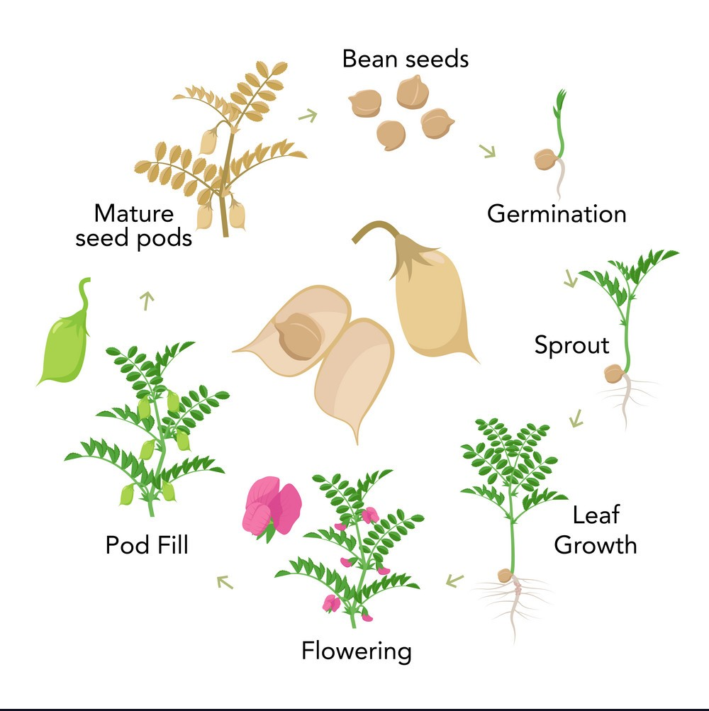
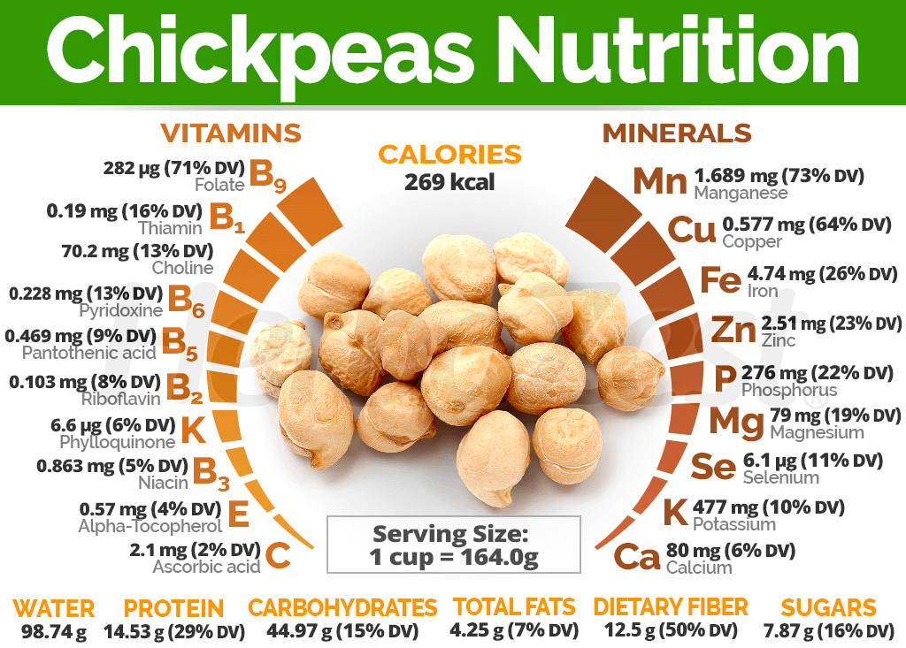
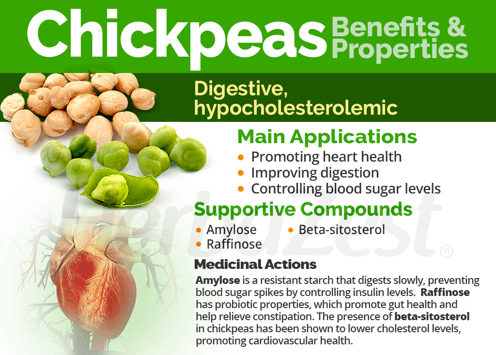
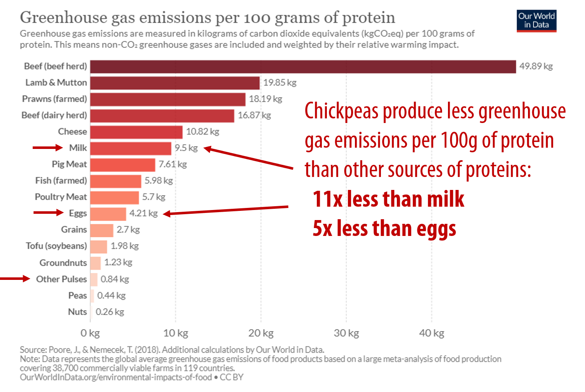

Gram (Chickpeas)
Types of Gram:
Desi Chickpeas:
Also Known As: Brown chickpeas.
Description: Desi chickpeas have a small, angular shape and a rough coat. They are darker in color and have a strong flavor.
Uses: Commonly used in Indian cuisine for dishes like chana masala and falafel.
Growth Conditions: Thrives in dry, warm climates and is more drought-resistant than other varieties.
Varieties: Includes various local varieties adapted to specific regions.
Kabuli Chickpeas:
Also Known As: White chickpeas.
Description: Kabuli chickpeas are larger, lighter in color, and have a smoother coat compared to desi chickpeas.
Uses: Popular in Mediterranean and Middle Eastern dishes, often used in salads and hummus.
Growth Conditions: Prefers cooler climates and requires more moisture during growth.
Characteristics: Kabuli chickpeas have a milder flavor and creamier texture when cooked.
Green Chickpeas:
Also Known As: Fresh chickpeas.
Description: Green chickpeas are harvested while still immature and have a sweet, fresh flavor.
Uses: Used in salads, soups, and as a snack. They can be eaten raw or cooked.
Growth Conditions: Require similar conditions to other chickpeas but are harvested earlier.
Nutritional Value: Rich in vitamins and minerals, providing a nutritious addition to various dishes.
Black Chickpeas:
Also Known As: Kala chana.
Description: Black chickpeas are small, dark, and have a nutty flavor.
Uses: Used in Indian dishes, salads, and snacks. They are often roasted for a crunchy snack.
Growth Conditions: Require similar conditions to desi chickpeas and are drought-resistant.
Nutritional Value: High in fiber and protein, making them a healthy choice.
Growing Conditions
Climate:
Temperature:
Germination Stage: Chickpea seeds require a soil temperature of around 10°C to 30°C for optimal germination. Low soil temperatures below 5°C can delay germination.
Vegetative Growth Stage: During the vegetative phase, chickpeas prefer warm temperatures between 15°C and 25°C.
Reproductive Stage: As chickpeas transition to reproductive stages, temperatures between 20°C to 30°C are favorable . However, excessive heat above 35°C can adversely affect flowering and pod formation.
Harvest Stage: Warm and dry conditions are ideal during harvest to ensure the chickpeas are mature and reduce moisture content, preventing spoilage.
Rainfall and Moisture:
Moderate Rainfall: Chickpeas require moderate rainfall, generally between 300mm to 600mm per growing season. Rainfall distribution should be well-timed to ensure sufficient moisture during key growth stages.
Irrigation: In regions where rainfall is insufficient, irrigation is crucial, especially during flowering and pod filling. Over-irrigation should be avoided to prevent root diseases.
Drought Resistance: Chickpeas are known for their drought resistance and can tolerate dry conditions better than many other crops.
Sunlight:
Chickpeas require full sunlight for at least 6 to 8 hours a day. Adequate sunlight is essential for photosynthesis, which drives plant growth and development.
Cloudy conditions can reduce photosynthetic activity and yield.
Humidity:
Chickpeas prefer low to moderate humidity levels. High humidity can create conditions favorable for fungal diseases, impacting yield and quality.
Proper field management practices can help manage disease pressure in high-humidity conditions.
Wind:
Mild winds can aid in pollination, but strong winds can cause lodging, making harvesting difficult.
Windbreaks can be used to protect chickpea fields from strong winds, maintaining plant stability.
Soil:
Soil Type:
Loamy Soil: Chickpeas thrive best in loamy soils, which provide good drainage while retaining moisture.
Clayey Soil: Clayey soils can be suitable if well-drained.
Sandy Loam: Sandy loam soils are also favorable, offering good drainage and ease of root penetration.

Soil Structure:
Well-Drained: Chickpeas require well-drained soil to prevent waterlogging.
Good Aeration: Proper soil aeration is essential for root respiration and overall plant health.
Soil Fertility:
Nutrient-Rich: Chickpeas grow best in fertile soils with adequate levels of nitrogen, phosphorus, potassium, and micronutrients.
Organic Matter: The presence of organic matter enhances soil fertility and supports beneficial microorganisms.

Soil pH:
Optimal pH Range: Chickpeas prefer a slightly acidic to neutral soil pH, typically between 6.0 and 7.5.
pH Management: Lime can be added to acidic soils to raise the pH, while sulfur can be used to lower the pH of alkaline soils.
Soil Preparation:
Plowing and Tilling: Proper soil preparation involves plowing and tilling to create a fine seedbed.
Leveling: Leveling the field ensures uniform irrigation and prevents waterlogging.
Soil Conservation:
Erosion Control: Practices such as contour plowing and maintaining ground cover help prevent soil erosion.
Crop Rotation: Rotating chickpeas with other crops can improve soil health and reduce pest buildup.
Water Requirements:
General Water Needs:
Chickpeas require a total of approximately 300-500 millimeters (mm) of water throughout their growing season, depending on the variety, climate, and soil conditions.
Critical Growth Stages:
Germination: Adequate soil moisture is necessary for seed germination and seedling establishment.
Tillering: Water is crucial during the tillering stage to promote the growth of additional tillers, which can lead to higher yields.
Flowering and Pod Filling: Irrigation during the flowering and pod filling stages is vital for achieving good pod size and weight.
Late Season: Reducing irrigation towards the end of the growing season allows the soil to dry, facilitating harvesting and preventing lodging.
Drought and Stress Management:
Drought-Resistant Varieties: Plant drought-resistant chickpea varieties in regions prone to water scarcity.
Deficit Irrigation: Implement strategies where water is applied during the most critical growth stages to manage water resources during drought conditions.
Planting and Seeding:
Planting:
Chickpeas can be sown either by broadcasting seeds or by using seed drills for more uniform planting. They are typically sown in the spring or fall, depending on the climate.
Seeding Rates:
The seeding rate varies but generally ranges from 60 to 100 kg per hectare, depending on the variety and planting method.
Nutritional Value:
Carbohydrates:
Chickpeas are a rich source of carbohydrates, providing energy.
Fiber:
Chickpea products are high in dietary fiber, promoting digestive health.
Vitamins and Minerals:
Chickpeas contain essential nutrients, including B vitamins, iron, and magnesium.
Uses:
Food:
Chickpeas are used in salads, soups, and as a whole grain. They are also processed into products like chickpea flour and hummus.
By-Products:
Chickpea straw is used for animal bedding, mulch, and bioenergy production.
Environmental Impact and Sustainability:
Chickpeas are generally less water-intensive than many other crops, making them a relatively sustainable choice. Chickpea farming contributes to greenhouse gas emissions mainly through the use of fertilizers and machinery. Adopting sustainable practices such as crop rotation, conservation tillage, and the use of cover crops can help improve soil health and reduce environmental impact.
